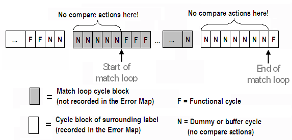

Adjusting the junctions between match loop and surrounding label
The sequencers pass waveform DC/DC power units to the data queue in blocks of 8. Each such block is supplemented by the information whether or not it is part of a match loop. This information applies to the block as a whole. The block with which the match loop starts is marked as a match loop block, and therefore all of the 8 cycles that are generated from it are supposed to be match loop cycles, which will not be recorded in the Error Map. The block in which the surrounding test continues after the match loop is marked as part of the surrounding test, and therefore all of its cycles will be recorded in the Error Map.
But a match loop can start, or end, anywhere within such a cycle block, and if the first match loop cycle is not the first cycle of its block, then the start cycles of this block will belong to the surrounding label, but will not be recorded in the Error Map. Similarly, the start cycles of the block that contains the first cycle of the surrounding test after the match loop can be match loop cycles, but they will be recorded in the Error Map. You can verify this, for example, by executing such a test online and then issuing the GETV? query (see Match loop traces in the test results).
This behavior can falsify the test result if one of the cycles from the surrounding label at the start of the first match loop block generates an error. This error will not be recorded in the Error Map, and will not be part of the final test result. It will be evaluated within the match loop, but only in the first pass. So, although the first pass will fail, and the loop be executed again, a match may be obtained in one of the following passes. But then the whole test may pass although it should fail because of the failing cycle just before the match loop.
In principle, the converse problem arises for the 8-cycle block that contains the first cycle of the surrounding label after the match loop. If this cycle is not the first cycle of its block, and one of the match loop cycles at the start of this "normal" cycle block generates an error, this error will be part of the final test result.
The problem at the match loop start can be prevented by inserting at least 7 buffer vectors without any compare actions just before the start of the match loop. It is not necessary to insert buffer vectors at the end of the match loop, because usually more than 7 cycles will be generated from the dummy vectors.
Example
An example for junction adjustment is shown in the following diagram:

In this example, the match loop begins at the 6th cycle of an 8-cycle block. Therefore, inserting 5 buffer vectors would be sufficient at the match loop start. But since calculating the exact position of the first and last match loop cycle within the 8-cycle blocks can be tiresome if your sequencer program contains loops or subroutine calls, you should always insert 7 buffer vectors (or possibly more if this is required for other reasons). Therefore, two more buffer cycles are present at the end of the preceding 8-cycle block in the diagram.
Functional changes
- Introduced before SmarTest 6.3.2